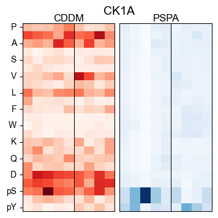
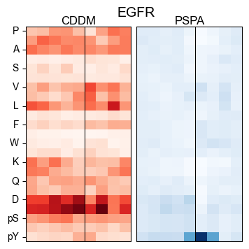
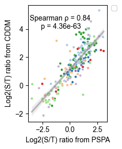
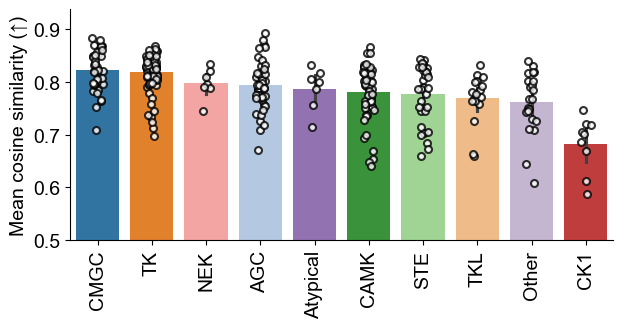
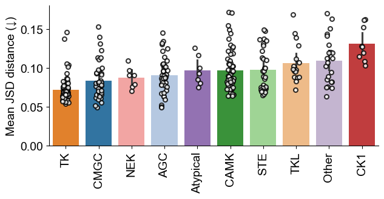
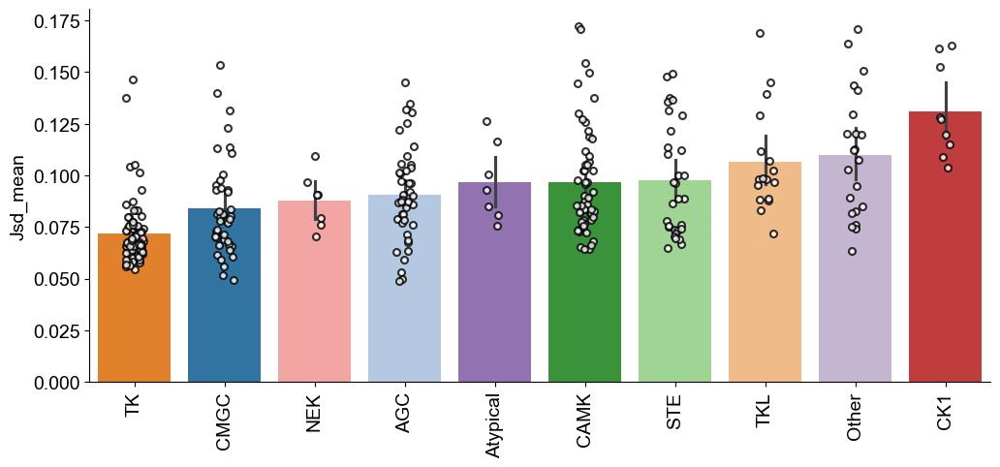
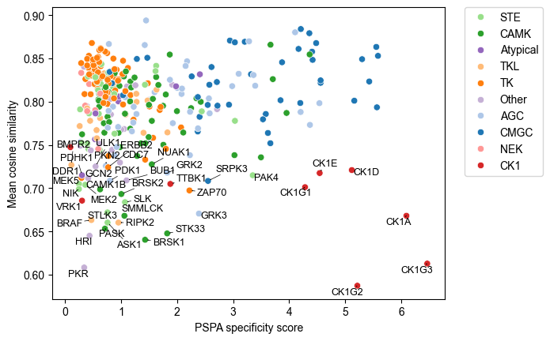

import pandas as pd
from katlas.data import *
from katlas.plot import *
from katlas.pssm import *Heatmap/ST/JSD/cosine comparison
Compare two heatmaps
cddm = pd.read_parquet('out/CDDM_pssms.parquet')cddm.index = cddm.index.str.split('_').str[1]pspa = Data.get_pspa_all_scale()cddm = cddm[pspa.columns].copy()pssm_df = recover_pssm(pspa.loc['PKACA'])def plot_heatmap_simple(matrix, # a matrix of values
title: str='heatmap', # title of the heatmap
figsize: tuple=(6,7), # (width, height)
cmap: str='binary', # color map, default is dark&white
**kwargs, # arguments for sns.heatmap()
):
"Plot heatmap based on a matrix of values"
plt.figure(figsize=figsize)
sns.heatmap(matrix, square=True,cmap=cmap, annot=False,**kwargs)
plt.title(title)
plt.ylabel('')
plt.xlabel('')
plt.yticks(rotation=0)plot_heatmap_simple(pssm_df)
import matplotlib.pyplot as plt
import seaborn as sns
from matplotlib.patches import Rectangle
def plot_two_heatmaps(matrix1, matrix2,
kinase_name="Kinase",
figsize=(4,4.5),
**kwargs):
"""
Plot two side-by-side heatmaps with black rectangle borders,
titles on top, shared kinase label below, and only left plot showing y-axis labels.
"""
fig, axes = plt.subplots(1, 2, figsize=figsize, gridspec_kw={'wspace': 0.05})
matrix1 = matrix1.drop(columns=0)
matrix2 = matrix2.drop(columns=0)
title1="CDDM"
title2="PSPA"
# Left heatmap (with y labels)
sns.heatmap(matrix1, square=False, cmap="Reds",
# vmin=0, vmax=1,
annot=False, cbar=False, ax=axes[0], **kwargs)
axes[0].set_title(title1, fontsize=12, pad=10)
axes[0].set_xlabel("")
axes[0].set_ylabel("")
axes[0].tick_params(left=True, bottom=True)
axes[0].tick_params(axis="y", rotation=0)
# Add rectangle border to left heatmap
axes[0].add_patch(Rectangle((0,0), matrix1.shape[1], matrix1.shape[0],
fill=False, edgecolor='black', lw=1.5))
# Right heatmap (no y labels)
sns.heatmap(matrix2, square=False, cmap="Blues",
# vmin=0, vmax=1,
annot=False, cbar=False, ax=axes[1], **kwargs)
axes[1].set_title(title2, fontsize=12, pad=10)
axes[1].set_xlabel("")
axes[1].set_ylabel("")
axes[1].tick_params(left=False, labelleft=False, bottom=True)
axes[1].tick_params(axis="y", rotation=0)
# Add rectangle border to right heatmap
axes[1].add_patch(Rectangle((0,0), matrix2.shape[1], matrix2.shape[0],
fill=False, edgecolor='black', lw=1.5))
# Make y tick horizontal
axes[0].set_title(title1, fontsize=12, pad=0)
axes[1].set_title(title2, fontsize=12, pad=0)
# force display every position
# n_positions = matrix1.shape[1]
# axes[0].set_xticks(np.arange(n_positions) + 0.5) # center of each cell
# axes[0].set_xticklabels(range(-5, 5), rotation=0) # or your custom labels
# axes[1].set_xticks(np.arange(n_positions) + 0.5)
# axes[1].set_xticklabels(range(-5, 5), rotation=0)
xpos = (list(matrix1.columns).index(-1) + list(matrix1.columns).index(1)) / 2 + 0.5
axes[0].axvline(xpos, color='black', lw=0.75)
axes[1].axvline(xpos, color='black', lw=0.75)
# set empty xticks
axes[0].set_xticks([])
axes[1].set_xticks([])
# Shared kinase label below
fig.suptitle(kinase_name, fontsize=14, x=0.52,y=0.95)import matplotlib.pyplot as plt
import seaborn as sns
import numpy as npplot_two_heatmaps(pssm_df,pssm_df,figsize=(4,4))
def plot_compare(cddm_df,pspa_df,kinase,**kwargs):
cddm_pssm = recover_pssm(cddm_df.loc[kinase])
pspa_pssm = recover_pssm(pspa_df.loc[kinase])
plot_two_heatmaps(cddm_pssm,pspa_pssm,kinase_name=kinase,**kwargs)k_list = ['PKACA','AMPKA1','DYRK2','ATR','CK1A','EGFR']for k in k_list:
plot_compare(cddm,pspa,k,figsize=(4,4))
# plt.show()
save_svg(f'fig/compare_{k}.svg')
# plt.close()




plot_compare(cddm,pspa,'EGFR')
Cbar
import matplotlib as mpldef plot_cbar(figsize=(5,0.3)):
fig, axes = plt.subplots(1, 2, figsize=figsize)
# Shared normalization [0,1]
norm = mpl.colors.Normalize(vmin=0, vmax=1)
# Red probability bar
cmap_red = plt.cm.Reds
cb1 = mpl.colorbar.ColorbarBase(
axes[0], cmap=cmap_red, norm=norm,
orientation='horizontal'
)
# cb1.set_label("Probability")
cb1.set_ticks([0, 0.5, 1])
# Blue probability bar
cmap_blue = plt.cm.Blues
cb2 = mpl.colorbar.ColorbarBase(
axes[1], cmap=cmap_blue, norm=norm,
orientation='horizontal'
)
# cb2.set_label("Probability")
cb2.set_ticks([0, 0.5, 1])plot_cbar()
save_svg('fig/cbar.svg')
ST ratio comparison
pspa_st = pspa[pspa['0pY']==0]pspa_st_ratio = np.log2(pspa_st['0pS']/pspa_st['0pT'])cddm_st_ratio = np.log2(cddm['0pS']/cddm['0pT'])st_ratio = pd.concat([pspa_st_ratio,cddm_st_ratio],axis=1)st_ratio.columns=['pspa','cddm']info = Data.get_kinase_info()
info = info[info.pseudo=='0'].copy()
hue_group = info.set_index('kinase')['modi_group']st_ratio['group'] = st_ratio.index.map(hue_group)st_ratio = st_ratio.dropna()from katlas.plot import *plt.figure(figsize=(2.5,3))
plot_corr(st_ratio,y='cddm',x='pspa',hue='group',s=12,
text_location=(0.4,0.85),
palette=group_color,legend=False)
plt.ylabel('Log2(S/T) ratio from CDDM')
plt.xlabel('Log2(S/T) ratio from PSPA')
plt.tight_layout()
save_svg('fig/ST_ratio.svg')/Users/icai/git/katlas/katlas/plot.py:653: UserWarning: No artists with labels found to put in legend. Note that artists whose label start with an underscore are ignored when legend() is called with no argument.
if hue is not None:
JS divergence
from katlas.clustering import *
from functools import partial((cddm_overlap==0).sum(1)/cddm_overlap.shape[1]).sort_values()index
YES1 0.086957
GSK3B 0.086957
EPHB3 0.086957
BMX 0.086957
MAPKAPK3 0.086957
...
CAMK1B 0.360870
SMMLCK 0.360870
BRAF 0.360870
VRK1 0.365217
GAK 0.365217
Length: 311, dtype: float64import numpy as np
def js_divergence(p1, # pssm
p2, # pssm
):
"p1 and p2 are two arrays (df or np) with index as aa and column as position"
assert p1.shape==p2.shape
valid = (p1 + p2) > 0
p1 = np.where(valid, p1, 0.0)
p2 = np.where(valid, p2, 0.0)
m = 0.5 * (p1 + p2)
js = 0.5 * np.sum(p1 * np.log((p1+ EPSILON) / (m + EPSILON)), axis=0) + \
0.5 * np.sum(p2 * np.log((p2+ EPSILON) / (m + EPSILON)), axis=0)
return jscommon_k = list(set(pspa.index)&set(cddm.index))score = pd.DataFrame(index=common_k)score['pspa_speci'] = pspa_overlap.apply(get_specificity_flat,axis=1)
score['group'] = score.index.map(hue_group)pspa_overlap = pspa.loc[common_k].copy()
cddm_overlap = cddm.loc[common_k].copy()def cosine_similarity_position(pssm1: pd.DataFrame, pssm2: pd.DataFrame):
"""Compute cosine similarity per position between two PSSMs, no sklearn."""
assert pssm1.shape == pssm2.shape, "PSSMs must have same shape"
sims = {}
for pos in pssm1.columns:
v1 = pssm1[pos].values
v2 = pssm2[pos].values
dot = np.dot(v1, v2)
norm1 = np.linalg.norm(v1)
norm2 = np.linalg.norm(v2)
sims[pos] = dot / (norm1 * norm2) if norm1 > 0 and norm2 > 0 else 0.0
return pd.Series(sims)# def euclidean_distance_position(pssm1: pd.DataFrame, pssm2: pd.DataFrame):
# """Compute Euclidean distance per position between two PSSMs, no sklearn."""
# assert pssm1.shape == pssm2.shape, "PSSMs must have same shape"
# dists = {}
# for pos in pssm1.columns:
# v1 = pssm1[pos].values
# v2 = pssm2[pos].values
# diff = v1 - v2
# dists[pos] = np.linalg.norm(diff) # sqrt(sum((v1 - v2)^2))
# return pd.Series(dists)def cosine_mean(cddm_pssm,pspa_pssm): return cosine_similarity_position(cddm_pssm,pspa_pssm).mean()
# def cosine_min(cddm_pssm,pspa_pssm): return cosine_similarity_position(cddm_pssm,pspa_pssm).min()
# def euclidean_mean(cddm_pssm,pspa_pssm): return euclidean_distance_position(cddm_pssm,pspa_pssm).mean()# score_list = []
# for k in common_k:
# pspa_pssm = recover_pssm(pspa.loc[k])
# cddm_pssm = recover_pssm(cddm.loc[k])
# score_list.append(euclidean_mean(pspa_pssm,cddm_pssm))
# score['euclidean_mean'] = score_listscore_list = []
for k in common_k:
pspa_pssm = recover_pssm(pspa.loc[k])
cddm_pssm = recover_pssm(cddm.loc[k])
score_list.append(cosine_mean(pspa_pssm,cddm_pssm))
score['cosine_mean'] = score_listscore_list = []
for k in common_k:
pspa_pssm = recover_pssm(pspa.loc[k])
cddm_pssm = recover_pssm(cddm.loc[k])
score_list.append(js_divergence(pspa_pssm,cddm_pssm).mean())
score['JSD_mean'] = score_list# score_list = []
# for k in common_k:
# pspa_pssm = recover_pssm(pspa.loc[k])
# cddm_pssm = recover_pssm(cddm.loc[k])
# score_list.append(cosine_min(pspa_pssm,cddm_pssm))
# score['cosine_min'] = score_listfrom adjustText import adjust_text
from matplotlib import pyplot as plt
import seaborn as sns
from scipy.stats import spearmanr, pearsonr
def plot_corr(
df, # dataframe that contains data
x, # x axis values, or colname of x axis
y, # y axis values, or colname of y axis
text_location=(0.8, 0.1), # relative coords in Axes (0–1)
method="spearman", # correlation method: 'pearson' or 'spearman'
index_list=None, # list of indices to annotate
hue=None,
reg_line=True,
**kwargs
):
"""
Given a dataframe and the name of two columns,
plot the two columns' correlation with either Pearson or Spearman.
Annotate points if their index is in index_list.
"""
x_vals = df[x]
y_vals = df[y]
# Compute correlation
if method.lower() == "spearman":
corr_val, pvalue = spearmanr(x_vals, y_vals)
corr_label = f"Spearman ρ = {corr_val:.2f}\n p = {pvalue:.2e}"
else:
corr_val, pvalue = pearsonr(x_vals, y_vals)
corr_label = f"Pearson r = {corr_val:.2f}\n p = {pvalue:.2e}"
# Plot regression line + scatter
if hue is not None:
sns.scatterplot(data=df, x=x, y=y, hue=hue, **kwargs)
if reg_line: sns.regplot(x=x_vals, y=y_vals, scatter=False, line_kws={'color': 'gray','alpha': 0.5})
plt.legend(
bbox_to_anchor=(1.05, 1), # (x, y) anchor relative to axes
loc="upper left", # where to attach the legend box
borderaxespad=0.
)
else:
sns.regplot(x=x_vals, y=y_vals, line_kws={'color': 'gray'}, **kwargs)
# # Add correlation text
# plt.text(
# x=text_location[0],
# y=text_location[1],
# s=corr_label,
# transform=plt.gca().transAxes,
# ha="center",
# va="center"
# )
# Annotate selected points if index_list is given
texts = []
if index_list is not None:
for idx in index_list:
if idx in df.index: # make sure index exists
texts.append(
plt.text(
x_vals.loc[idx],
y_vals.loc[idx],
str(idx),
fontsize=9,
ha="center",
va="center"
)
)
if texts:
adjust_text(texts, arrowprops=dict(arrowstyle="->", color="black", lw=0.5))def plot_bar(df,
value, # colname of value
group, # colname of group
title = None,
figsize = (12,5),
fontsize=14,
dots = True, # whether or not add dots in the graph
rotation=90,
ascending=False,
ymin=None,
**kwargs
):
"Plot bar graph from unstacked dataframe; need to indicate columns of values and categories"
plt.figure(figsize=figsize)
idx = df.groupby(group)[value].mean().sort_values(ascending=ascending).index
sns.barplot(data=df, x=group, y=value, order=idx,hue=group, legend=False, **kwargs)
if dots:
marker = {'marker': 'o',
'color': 'white',
'edgecolor': 'black',
'linewidth': 1.5,
'jitter':True,
's': 5}
sns.stripplot(data=df,
x=group,
y=value,
order=idx,
alpha=0.8,
# ax=g.ax,
**marker)
# Increase font size for the x-axis and y-axis tick labels
plt.tick_params(axis='x', labelsize=fontsize) # Increase x-axis label size
plt.tick_params(axis='y', labelsize=fontsize) # Increase y-axis label size
# Modify x and y label and increase font size
plt.xlabel('', fontsize=fontsize)
plt.ylabel(value, fontsize=fontsize)
# Rotate X labels
plt.xticks(rotation=rotation)
# Plot titles
if title is not None:
plt.title(title,fontsize=fontsize)
if ymin is not None: plt.ylim(bottom=ymin)
plt.gca().spines[['right', 'top']].set_visible(False)hue_subfamily=info.set_index('kinase')['subfamily']group_color2 = pd.DataFrame(group_color).Tgroup_color2 = group_color2.reset_index(names='modi_group')subfamily_color = info[['modi_group','subfamily']].merge(group_color2).drop(columns=['modi_group']).set_index('subfamily')subfamily_color = subfamily_color.apply(tuple, axis=1).to_dict()score['subfamily'] = score.index.map(hue_subfamily)plot_bar(score,'cosine_mean','subfamily',
palette=subfamily_color,
ymin=0.5,figsize=(25,5)
)
plt.ylabel('Mean cosine similarity (↑)')Text(0, 0.5, 'Mean cosine similarity (↑)')
plot_bar(score,'cosine_mean','group',palette=group_color,ymin=0.5,figsize=(7,3))
plt.ylabel('Mean cosine similarity (↑)')
save_svg('fig/cosine.svg')
plot_bar(score,'JSD_mean','group',palette=group_color,figsize=(7,3),ascending=True)
plt.ylabel('Mean JSD distance (↓)')
save_svg('fig/JSD.svg')
plot_bar<function katlas.plot.plot_bar(df, value, group, title=None, figsize=(12, 5), fontsize=14, dots=True, rotation=90, ascending=False, *, data=None, x=None, y=None, hue=None, order=None, hue_order=None, estimator='mean', errorbar=('ci', 95), n_boot=1000, seed=None, units=None, weights=None, orient=None, color=None, palette=None, saturation=0.75, fill=True, hue_norm=None, width=0.8, dodge='auto', gap=0, log_scale=None, native_scale=False, formatter=None, legend='auto', capsize=0, err_kws=None, ci=<deprecated>, errcolor=<deprecated>, errwidth=<deprecated>, ax=None)>plot_bar(score,'JSD_mean','group',ascending=True,palette=group_color,)
plot_bar(score,'JSD_mean','group',palette=group_color)
k_list = score['cosine_mean'].sort_values().head(40).index
# k_list = score[score['cosine_mean']<0.75].index
plot_corr(score,'pspa_speci','cosine_mean',
text_location=(0.8,0.9),
index_list=k_list,
reg_line=False,
hue='group',palette=group_color)
plt.ylabel('Mean cosine similarity')
plt.xlabel('PSPA specificity score')
save_svg('fig/cosine_similarity_specificity.svg')
# plt.axhline(y=0.75,color='r', linestyle='--', linewidth=2,alpha=0.2)
Experiment
k='ATR'
pspa_pssm = recover_pssm(pspa.loc[k])
cddm_pssm = recover_pssm(cddm.loc[k])
js_divergence(pspa_pssm,cddm_pssm)array([0.14273914, 0.12959633, 0.08697435, 0.05695579, 0.05958804,
0.02867595, 0.2633553 , 0.10621596, 0.0445805 , 0.08671556])cddm_pssm = recover_pssm(cddm.loc['GSK3B'])
pspa_pssm = recover_pssm(pspa.loc['GSK3B'])cddm_pssm[1]aa
P 0.420290
G 0.075362
A 0.039130
C 0.007246
S 0.015942
T 0.018841
V 0.063768
I 0.031884
L 0.046377
M 0.007246
F 0.013043
Y 0.007246
W 0.002899
H 0.008696
K 0.014493
R 0.057971
Q 0.024638
N 0.007246
D 0.034783
E 0.023188
pS 0.037681
pT 0.021739
pY 0.020290
Name: 1, dtype: float64pspa_pssm[1]aa
P 0.03262
G 0.03084
A 0.03382
C 0.03616
S 0.03246
T 0.03246
V 0.03149
I 0.03544
L 0.03455
M 0.03246
F 0.03358
Y 0.03173
W 0.02931
H 0.02956
K 0.03076
R 0.03930
Q 0.28018
N 0.04421
D 0.02762
E 0.02778
pS 0.03213
pT 0.03213
pY 0.02940
Name: 1, dtype: float64Both PSPA and CDDM have Q as max in position 1.
Let’s test which distance/similarity metric makes sense most
euclidean_distance_position(cddm_pssm,pspa_pssm)-5 0.117948
-4 0.209271
-3 0.141432
-2 0.155427
-1 0.159968
0 0.229537
1 0.363615
2 0.165754
3 0.155656
4 0.397584
dtype: float64pd.Series(js_divergence(cddm_pssm,pspa_pssm),index=list(range(-5,5)))-5 0.046637
-4 0.086952
-3 0.063191
-2 0.062703
-1 0.072525
0 0.027765
1 0.132643
2 0.075066
3 0.062533
4 0.172927
dtype: float64cosine_similarity_position(cddm_pssm,pspa_pssm)-5 0.868829
-4 0.713273
-3 0.843677
-2 0.808220
-1 0.790774
0 0.950192
1 0.596159
2 0.774477
3 0.795978
4 0.793016
dtype: float64cosine_similarity_position(cddm_pssm,pspa_pssm).mean()np.float64(0.7934594439218537)Only cosine shows position 1 similar, while JS divergence and euclidean distance emphasize the difference in position 1.